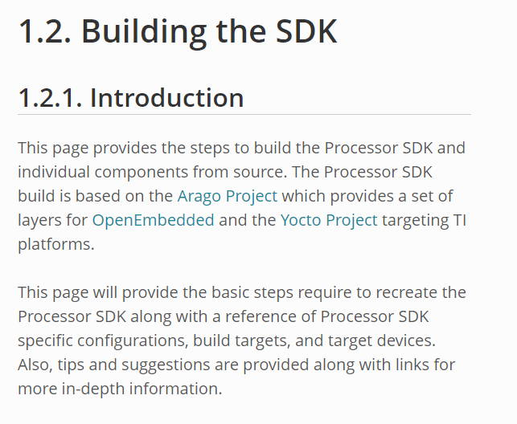
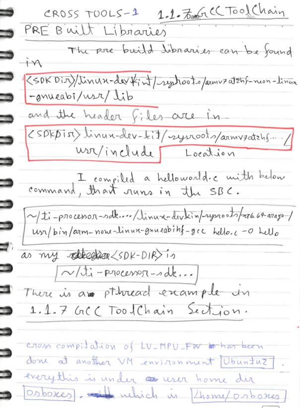
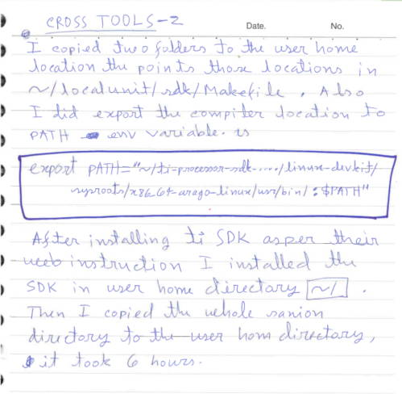
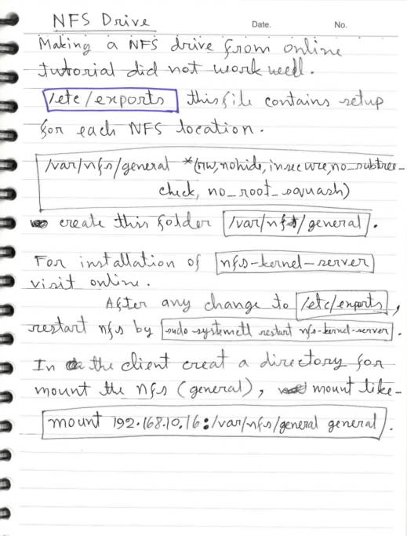
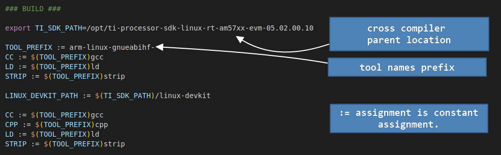
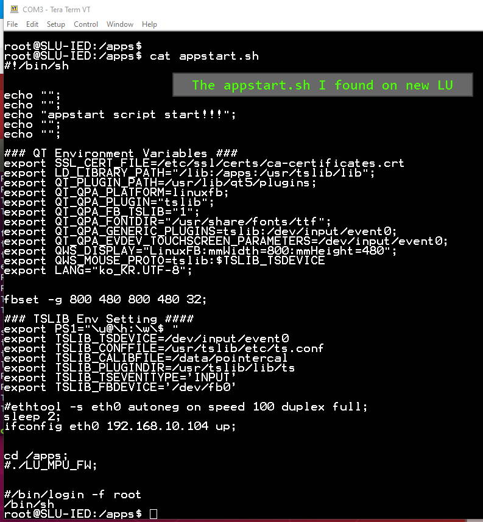
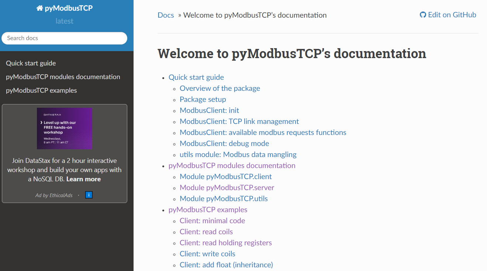
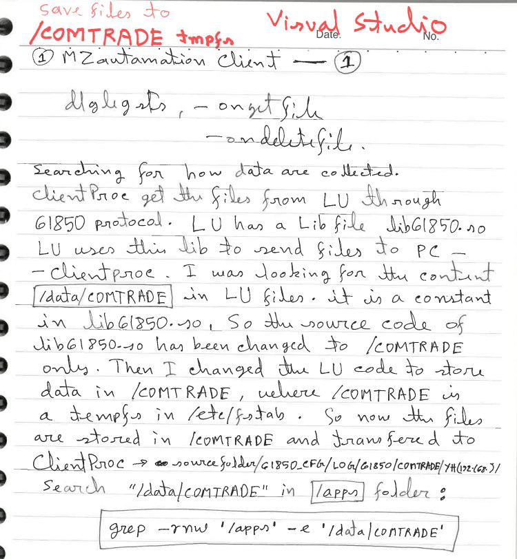
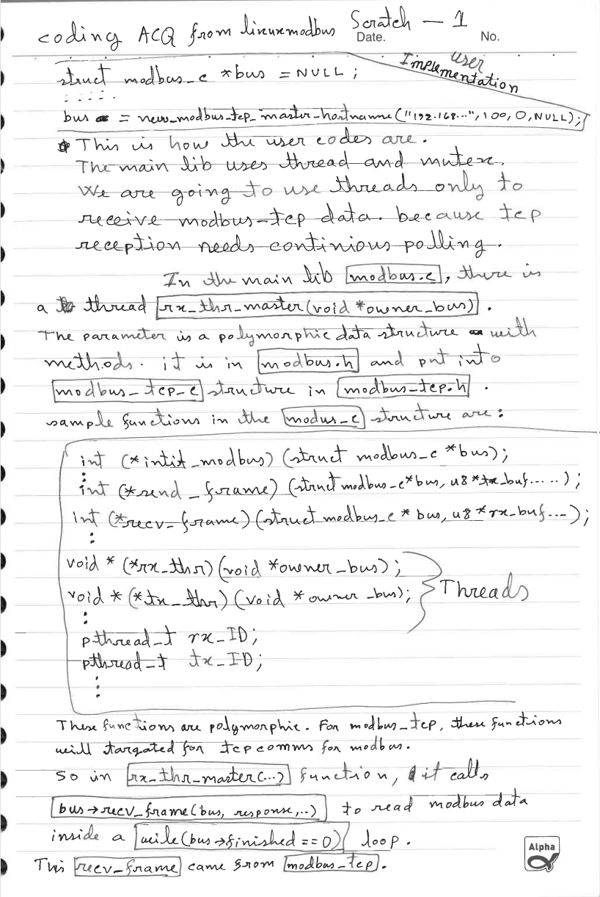
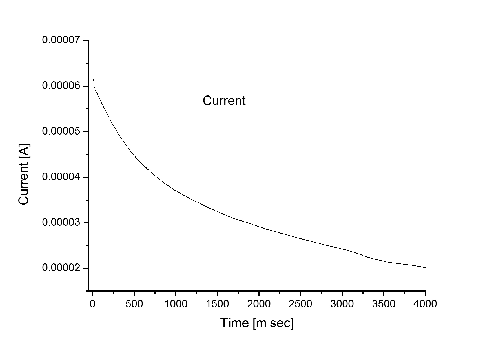

Startup Document Links
make command in the Ubuntu VM. The files are already placed at several locations.
All the locations are explained below. We can start development directly in the VM. We are trying to understand the locations of the required resources here.
Also the ti sdk documentation stated some requirements which is already done in the Ubuntu VM. The links to ti sdk documents and requirements are mentioned below.
check 1.1.2 : 1.1.2. Windows SD Card Creation Guide

Reference 1.1.3. Download and Install the SDK

These documents statements some requirement before ti Linux development.
Makefile
The /home/taki/LocalUnit/sdk is for build the project. This makefile includes the sdk location as 
Also see the BSP location
/sanion/HUR-IED/bsp/linux-rt-4.14.79Also check the following locations that indicates to inside bsp locations.

SLU-IED:~$ cat /etc/fstab
# stock fstab - you probably want to override this with a machine specific one
/dev/root / auto defaults,rw 1 1
proc /proc proc defaults 0 0
devpts /dev/pts devpts mode=0620,gid=5 0 0
usbdevfs /proc/bus/usb usbdevfs noauto 0 0
tmpfs /run tmpfs mode=0755,nodev,nosuid,strictatime 0 0
tmpfs /var/volatile tmpfs defaults,size=50M 0 0
tmpfs /media/ram tmpfs defaults,size=16M 0 0
#tmpfs /data/COMTRADE tmpfs defaults,size=100M 0 0
# uncomment this if your device has a SD/MMC/Transflash slot
/dev/mmcblk0p2 /upgrade ext4 defaults,sync,noauto 1 2
/dev/mmcblk0p3 /data ext4 defaults,sync,noauto 1 2

Follow this 1.1.3. Download and Install the SDK
to setup an environment to develop ti processor apps.
After download
After installing the binary:
Following article at GCC

It looks liketi-processor-linux-..../linux-devkit/sysroots/x86_64-arago-linux/ location has the cross compiler tools.

Cross Tools Pre Built Libraries
The pre built libraries can be found in :
<SDK DIR>/linux-devkit/sysroots/armv7at2hf-neon-linux-gnueabi/usr/lib location. And the header files are in
<SDK DIR>/linux-dev-kit/sysroots/armv7at2hf-neon-linux-gnueabi/usr/include location.
Later I compiled a helloworld.c by using following command.
There is also a pthread example is in1.1.7 GCC Toolchain section.
Another code with loops:
Command
After download
ti-processor-sdk-linux-rt-am57xx-evm-08_02_01_00-Linux-x86-Install.bin file
we have to run it in Ubuntu.
After installing the binary:
Following article at GCC
1.1.7 GCC Toolchain states various folder locations of the toolchain. It looks like
The pre built libraries can be found in :
Later I compiled a helloworld.c by using following command.
~/ti-processor-sdk...../linux-devkit/sysroots/x86_64-arago..../usr/bin/arm-none-linux-gnueabihf-gcc hello.c -o hello There is also a pthread example is in
#include ;
#include ;
#include ;
#include ;
#include ;
#include ;
#include ;
int print_message_function(void *ptr);
/* struct to hold data to be passed to a thread
this shows how multiple data items can be passed to a thread */
typedef struct str_thdata
{
int thread_no;
char message[100];
} thdata;
int main(int argc, void **argv)
{
pthread_t thread1, thread2;
thdata data1, data2;
data1.thread_no = 1;
strcpy(data1.message, "Hello!");
data2.thread_no = 2;
strcpy(data2.message, "Hi!");
pthread_create (&thread1, NULL, (void *) &print_message_function, (void *) &data1);
pthread_create (&thread2, NULL, (void *) &print_message_function, (void *) &data2);
pthread_join(thread1, NULL);
pthread_join(thread2, NULL);
exit(0);
}
int print_message_function ( void *ptr )
{
thdata *data;
data = (thdata *) ptr; /* type cast to a pointer to thdata */
/* do the work */
printf("Thread %d says%s \n", data->thread_no, data->message);
return 0;
}
#include
#include
#include
#include
#include
#include
#include
int printmsgfunc(void *func);
typedef struct str_thdata
{
int thread_no;
char msg[120];
}thdata;
int main(int argc, void **argv)
{
pthread_t thread1, thread2;
thdata data1, data2;
data1.thread_no = 1;
strcpy(data1.msg, "This Text from T1");
data2.thread_no = 2;
strcpy(data2.msg, "Second Thread MSG T2");
pthread_create(&thread1, NULL, (void *)&printmsgfunc, (void *)&data1);
pthread_create(&thread2, NULL, (void *)&printmsgfunc, (void *)&data2);
pthread_join(thread1, NULL);
pthread_join(thread2, NULL);
while(1)
{
;
}
exit(0);
}
int printmsgfunc(void *ptr)
{
thdata *data;
data = (thdata *)ptr;
while(1)
{
printf("Thread %d Out %s \n", data->thread_no, data->msg);
sleep(1);
}
return 0;
}
~/ti-processor-sdk...../linux-devkit/sysroots/x86_64-arago..../usr/bin/arm-none-linux-gnueabihf-gcc threadxA.c -o threadxA 
So there are a number of tools that needed to install or download.
$ sudo apt-get install git build-essential python diffstat texinfo gawk chrpath dos2unix wget unzip socat doxygen libc6:i386 libncurses5:i386 libstdc++6:i386 libz1:i386 Cross-Compile Toolchain
Run the following commands to install the Linaro Toolchain.
$ wget https://releases.linaro.org/components/toolchain/binaries/7.2-2017.11/arm-linux-gnueabihf/gcc-linaro-7.2.1-2017.11-x86_64_arm-linux-gnueabihf.tar.xz
$ tar -Jxvf gcc-linaro-7.2.1-2017.11-x86_64_arm-linux-gnueabihf.tar.xz -C $HOME
$ wget https://releases.linaro.org/components/toolchain/binaries/7.2-2017.11/aarch64-linux-gnu/gcc-linaro-7.2.1-2017.11-x86_64_aarch64-linux-gnu.tar.xz
$ tar -Jxvf gcc-linaro-7.2.1-2017.11-x86_64_aarch64-linux-gnu.tar.xz -C $HOME

Following NFS folder /var/nfs/general is created in the newly created Ubuntu VM. It is /nfs_resource in the older VM
sudo apt install nfs-kernel-server.
edit /var/nfs/general *(rw,nohide,insecure,no_subtree_check,no_root_squash) Create a folder
sudo systemctl restart nfs-kernel-server . You also need to setup ufw firewall
commands as sudo ufw allow from 203.0.113.24 to any port nfs . In the client create a folder (my folder is general) use command
mount 192.168.10.16:/var/nfs/general general 
This docs and docs could help a small .
Ctrl + c signal. 

We may usually want to use ncurses

Modify Makefile to crosscompile the library.
### BUILD ###
export TI_SDK_PATH=/opt/ti-processor-sdk-linux-rt-am57xx-evm-05.02.00.10
TOOL_PREFIX := arm-linux-gnueabihf-
CC := $(TOOL_PREFIX)gcc
LD := $(TOOL_PREFIX)ld
STRIP := $(TOOL_PREFIX)strip
LINUX_DEVKIT_PATH := $(TI_SDK_PATH)/linux-devkit
CC := $(TOOL_PREFIX)gcc
CPP := $(TOOL_PREFIX)cpp
LD := $(TOOL_PREFIX)ld
STRIP := $(TOOL_PREFIX)strip
#CC=gcc
#CPP=g++
#CFLAGS= -Wall -O2 -g -D_REENTRANT -fPIC
#CFLAGS= -Wall -O2 -g -D_REENTRANT -fPIC -DDEBUG
#CFLAGS= -Wall -O2 -fno-defer-pop -g -D_REENTRANT -fPIC -DDEBUG
CFLAGS= -Wall -g -D_REENTRANT -fPIC -DDEBUG
#CFLAGS= -Wall -g -D_REENTRANT -fPIC -mtune=generic
#CFLAGS= -Wall -g -D_REENTRANT -fPIC -m486
#CFLAGS= -Wall -g -D_REENTRANT -fPIC
CPPFLAGS=$(CFLAGS)
LIB_OBJS=modbus.o modbus_serial.o modbus_asc.o modbus_rtu.o modbus_tcp.o
all: libmodbus.so libmodbus.a example example2
# mb_read mb_analyzer mb_responder
# example example2
clean:
rm -f example example.o example2 example2.o mb_read mb_read.o mb_analyzer mb_analyzer.o mb_responder mb_responder.o $(LIB_OBJS) libmodbus.so libmodbus.a
### C Library and archive
# a shared library
# if you want this, copy the library to some system-wide library directory and run ldconfig
libmodbus.so: $(LIB_OBJS)
$(CC) -shared -Wl,-soname,$@ -o $@ $(LIB_OBJS)
# a "static" library, also known as an "archive"
libmodbus.a: $(LIB_OBJS)
ar cruv $@ $(LIB_OBJS)
ranlib $@
# the rest gets taken care of by the implicit rule of .c.o
### INSTALL ###
MY_LIBDIR=/usr/lib
MY_INCLDIR=/usr/include
MY_LIBS=libmodbus.so libmodbus.a
MY_HEADERS=modbus_serial.h modbus_asc.h modbus_rtu.h modbus_tcp.h modbus.h modbus_list.h
install: $(MY_LIBS)
cp -dpR $(MY_LIBS) $(MY_LIBDIR)/
cp $(MY_HEADERS) $(MY_INCLDIR)/
uninstall:
for file in $(MY_LIBS); do rm $(MY_LIBDIR)/$$file; done
for file in $(MY_HEADERS); do rm $(MY_INCLDIR)/$$file; done
### EXAMPLES ###
#example.o: example.c
# $(CC) $(CFLAGS) -c -o $@ $<
example: example.o libmodbus.a
$(CC) -o $@ example.o -L. -lmodbus -lpthread
example2: example2.o libmodbus.a
$(CC) -o $@ example2.o -L. -lmodbus -lpthread
mb_read: mb_read.o
$(CPP) -o $@ -L. -lmodbus -lpthread -lpcre $<
mb_analyzer: mb_analyzer.o
$(CPP) -o $@ -L. -lmodbus -lpthread -lpcre $<
mb_responder: mb_responder.o
$(CPP) -o $@ -L. -lmodbus -lpthread -lpcre $<

In
getVolts(...) as below :
int getVolts(float *ret)
{
int tmp_result;
struct modbus_c* bus = NULL;
int i;
u16 my_response_data[VOLTS_SIZE];
char *response = (char *)my_response_data;
modbus_init();
bus = new_modbus_tcp_master_hostname( "192.168.10.100", 100, 0, NULL);
if (bus == NULL)
{
printf("Error - 1\n");
return 1;
}
adjust_pend_timeout(bus, 4000000); // 4 s, default is 2 s
if ( modbus_open(bus,0,1) != 0)
{
modbus_destroy(bus);
printf("Error 2\n");
return 1;
}
else
{
printf("Modbus Opened \n");
}
tmp_result = read_holding_registers(
bus, // modbus to use
1, // device ID to ask
1100, // start address
24, // datapoint count
my_response_data
);
if (tmp_result == 0)
{
memcpy((void *)ret, (void *)my_response_data, 24);
}
else
{
printf("Hmm... error? : %s\n", modbus_error(tmp_result) );
return 1;
}
modbus_close(bus);
modbus_destroy(bus);
modbus_cleanup();
return 0;
}

root@SLU-IED:/apps$
root@SLU-IED:/apps$ cat appstart.sh
#!/bin/sh
echo "";
echo "";
echo "appstart script start!!!";
echo "";
echo "";
### QT Environment Variables ###
export SSL_CERT_FILE=/etc/ssl/certs/ca-certificates.crt
export LD_LIBRARY_PATH="/lib:/apps:/usr/tslib/lib";
export QT_PLUGIN_PATH=/usr/lib/qt5/plugins;
export QT_QPA_PLATFORM=linuxfb;
export QT_QPA_PLUGIN="tslib";
export QT_QPA_FB_TSLIB="1";
export QT_QPA_FONTDIR="/usr/share/fonts/ttf";
export QT_QPA_GENERIC_PLUGINS=tslib:/dev/input/event0;
export QT_QPA_EVDEV_TOUCHSCREEN_PARAMETERS=/dev/input/event0;
export QWS_DISPLAY="LinuxFB:mmWidth=800:mmHeight=480";
export QWS_MOUSE_PROTO=tslib:$TSLIB_TSDEVICE
export LANG="ko_KR.UTF-8";
fbset -g 800 480 800 480 32;
### TSLIB Env Setting ####
export PS1="\u@\h:\w\$ "
export TSLIB_TSDEVICE=/dev/input/event0
export TSLIB_CONFFILE=/usr/tslib/etc/ts.conf
export TSLIB_CALIBFILE=/data/pointercal
export TSLIB_PLUGINDIR=/usr/tslib/lib/ts
export TSLIB_TSEVENTTYPE='INPUT'
export TSLIB_FBDEVICE='/dev/fb0'
#ethtool -s eth0 autoneg on speed 100 duplex full;
sleep 2;
ifconfig eth0 192.168.10.104 up;
cd /apps;
#./LU_MPU_FW;
#/bin/login -f root
/bin/sh
root@SLU-IED:/apps$
Python pymodbustcp helper code and documentation
pyModbusTCP Document Link
lib61850.so 
cd /appsgrep -rnw '.' -e '\data\COMTRADE'This command found that
So source code of lib61850.so has been changed for "\COMTRADE" location. In the LU machine \etc\fstab is changed as below
# stock fstab - you probably want to override this with a machine specific one /dev/root / auto defaults,rw 1 1 proc /proc proc defaults 0 0 devpts /dev/pts devpts mode=0620,gid=5 0 0 usbdevfs /proc/bus/usb usbdevfs noauto 0 0 tmpfs /run tmpfs mode=0755,nodev,nosuid,strictatime 0 0 tmpfs /var/volatile tmpfs defaults,size=50M 0 0 tmpfs /media/ram tmpfs defaults,size=16M 0 0 tmpfs /COMTRADE tmpfs defaults,size=100M 0 0 # uncomment this if your device has a SD/MMC/Transflash slot /dev/mmcblk0p2 /upgrade ext4 defaults,sync,noauto 1 2 /dev/mmcblk0p3 /data ext4 defaults,sync,noauto 1 2
PD data accusition is happened in
CalibratePDdatthread thread is activated and
CreatePDdatthread was deactivated or comment out. Because file saving operation has now been added to CalibratePDdatthread
thread function. 61850 messages are called mms data. It can be low level API. ClientProc Actually send commands through mms messages. It also receives/create/delete files in or from remote devices.
C:\Users\jibon\develop\61850Lib\libiec61850-0.9.0.2_2017_x64\src\mms\iso_mms\client\mms_client_connection.c The function

During compilation for arm-linux platform it shows some error. But I built it as static library. The the library
libmodbus.a is
generated in /src/.libs directory. Then I copied the .a file into /home/taki/LocalUnit/sdk/libs directory, and assigned -lmodbus
Autogen Configure Make.
./autogen.sh
./configure CC=arm-linux-gnueabihf-gcc \
CXX=arm-linux-gnueabihf-g++ \
AR=arm-linux-gnueabihf-ar \
LD=arm-linux-gnueabihf-ld \
RANLIB=arm-linux-gnueabihf-ranlib \
--host=arm-linux-gnueabihf \
--target=arm \
--enable-static
make
# some errors may occur
# Env variable sets to /opt/ti-processor-sdk-linux-rt-am57xx-evm-05.02.00.10/linux-devkit/sysroots/x86_64-arago-linux/usr/bin/
# So crosscompiler arm-linux-gnueabihf-gcc and others are on that location.
# files in /src/.libs/libmodbus.a . it is a static library. No need to copy .so file to target /usr/lib .
A Test project was made in
export TI_SDK_PATH=/opt/ti-processor-sdk-linux-rt-am57xx-evm-05.02.00.10
TOOL_PREFIX := arm-linux-gnueabihf-
#TOOL_PREFIX :=
CC := $(TOOL_PREFIX)gcc
LD := $(TOOL_PREFIX)ld
STRIP := $(TOOL_PREFIX)strip
#LINUX_DEVKIT_PATH := $(TI_SDK_PATH)/linux-devkit
CC := $(TOOL_PREFIX)gcc
CPP := $(TOOL_PREFIX)cpp
LD := $(TOOL_PREFIX)ld
STRIP := $(TOOL_PREFIX)strip
DEST_DIR=/nfs_resource/
#CC=gcc
#CPP=g++
#CFLAGS= -Wall -O2 -g -D_REENTRANT -fPIC
#CFLAGS= -Wall -O2 -g -D_REENTRANT -fPIC -DDEBUG
#CFLAGS= -Wall -O2 -fno-defer-pop -g -D_REENTRANT -fPIC -DDEBUG
CFLAGS= -Wall -g -D_REENTRANT -fPIC -DDEBUG
#CFLAGS= -Wall -g -D_REENTRANT -fPIC -mtune=generic
#CFLAGS= -Wall -g -D_REENTRANT -fPIC -m486
#CFLAGS= -Wall -g -D_REENTRANT -fPIC
CPPFLAGS=$(CFLAGS)
LIB_OBJS=main.o Acq.o
all: OBJECT ACQ_FW
# mb_read mb_analyzer mb_responder
# example example2
clean:
rm -f ACQ_FW.a main.o $(LIB_OBJS)
### C Library and archive
#%.o : %.c
# @echo $@
# @$(CC) $(CFLAGS) -g -o "$@" "$<" -I. -L. -lmodbus -lpthread
print: $(wildcard *.c)
ls -la $?
OBJECT:
@echo Building $@
@$(CC) $(CFLAGS) -c "Acq.c" -I. -L. -lmodbus -lpthread
@$(CC) $(CFLAGS) -c main.c -I. -L. -lmodbus -lpthread
#Acq.o : Acq.c
# @echo Building $@
# @$(CC) $(CFLAGS) -g -o "$@" "$<" -I. -L. -lmodbus -lpthread
ACQ_FW: main.o Acq.o
# $(CC) -c Acq.c main.c
$(CC) -o $(DEST_DIR)$@ "main.o" "Acq.o" -I. -L. -lmodbus -lpthread
# a shared library
# if you want this, copy the library to some system-wide library directory and run ldconfig
#libmodbus.so: $(LIB_OBJS)
# $(CC) $@ -o $@ $(LIB_OBJS)
# a "static" library, also known as an "archive"
#libmodbus.a: $(LIB_OBJS)
# ar cruv $@ $(LIB_OBJS)
# ranlib $@
# the rest gets taken care of by the implicit rule of .c.o
documentation page is H.E.R.E, it is https page so http will not show any page.
Config Files::
Primary Code location DlgIedSts.cpp contains most of the functionalities. I was trying to detect how it collects data from LU through 61850 protocol libraries. It has some config and settings files and a directory structure for operations.
1.
2.
Import Files over 61850 and saving
It is OnGetFileList(...) function or callback that receive and save the file. Each File saving is done
inside OnGetFile(...) function. To debug the code in visual studio it is needed to place
#ifdef _DEBUG
TRACE("Retrieving file directory : " + sRemotePath + " : " + strError + "\n");
#endif
this type of trace to print out debug informations. I use
OnDeleteFile(...) function to delete files from the Local Unit (which is remote unit). This
function eventually calls a lib61850 library function IedConnection_deleteFile(m_con, &error, sFile);
finally. LU side files are backed up in
It is required to update or edit SA_Client.ini file to set up a new LU connection. Use SCL_Manager.exe to configure the connection.
git Location of the updated codes
Source code here http://git.sanion.com/Fork-JBN/61850-and-lu/-/tree/develop.
Working directory in /home/taki/fork_LU61850 .
When using git add, add only the changed files.
Compile lib61850
Change Makefile to correct local path.
When using git add, add only the changed files.
git remote show origin
git checkout -b new_featured_branch
git add .
git commit -m "commit message"
git push -u origin new_featured_branch
Change Makefile to correct local path.
cd cmd/gnuchmod 777 mmslite802.sh touch cmd/gnu/cc.lst settimeofday(&tmval, NULL);
/*
if(openAcqBus() == 0)
{
tme = readAcqDateTime(&tvl);
tmval.tv_sec = tme;
tmval.tv_usec = 100;
settimeofday(&tmval, NULL);
closeModbus();
}
*/
$ date --set="YYYY-MM-DD hh:mm:ss"
$ sudo date --set="2023-02-06 14:30:00"
$ sudo hwclock --set --date="2023-02-06 14:30:00"
$ sudo timedatectl set-time "2023-02-06 14:30:00"
$ ntpdate server-name
$ sudo ntpdate pool.ntp.org
